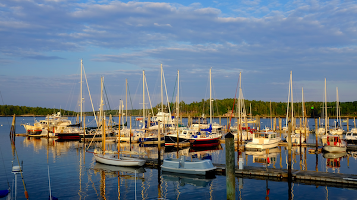

<dom-module id="project-cards">
	<style type="text/css">

		paper-card{
			background-image: "trip.png";
			width: 350px;
			height: 400px;
		}
		paper-fab{
			float: right;
			margin-top: -8%;
			margin-right: 5%;
		}

		paper-dialog{
			height: 80%;
			width: 90%;
		}

		img{
			background-repeat: no-repeat;
			background-size: cover;
			width: 100%;
			height: 400px;
			object-fit: cover;
			margin: 0;
			padding: 0;
		}
	</style>
	<template>
		<paper-card heading="salad days" image="trip.png" elevation="1" on-click="toogleDialog">
			<paper-fab icon="home" elevation="5"></paper-fab>
			
			<paper-dialog id="dialog" entry-animation="scale-up-animation" exit-animation="scale-down-animation">
				
			</paper-dialog>
		
		</paper-card>
	</template>
</dom-module>
<script>
	Polymer({
		is: "project-cards",
		toogleDialog: function(){
			document.getElementById('dialog').toggle();
		}
	});
</script>
